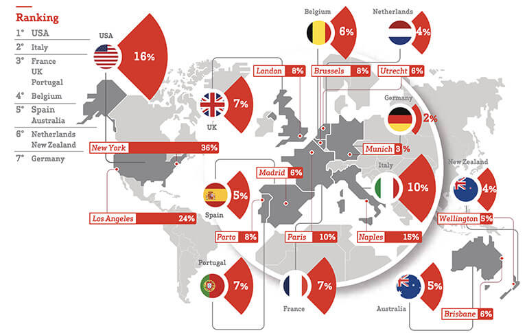

The Science of Noise
This paper is a result of a critical assessment of data recorded in a recent survey obtained from GfK Eurisko and promoted by Amplifon, based on responses from 8,800 people from 11 countries.
The study was designed to gather information about the relationship between exposure to noise and its effects on health, which range from those on hearing to the impact on general physical and psychological wellbeing. Survey results were discussed during a round table conference among experts, and were completed by a review of recent scientific literature on the topic.
The Exposure Noise Pollution Index (ENPI) evaluates the perception of noise exposure in 11 countries all over the world. ENPI evaluates the amount, recurrence and length of the noises to which people are exposed to in big cities. The map represents the percentages of high noise exposure and highlights the noisiest city in each country involved in the survey.
View full report